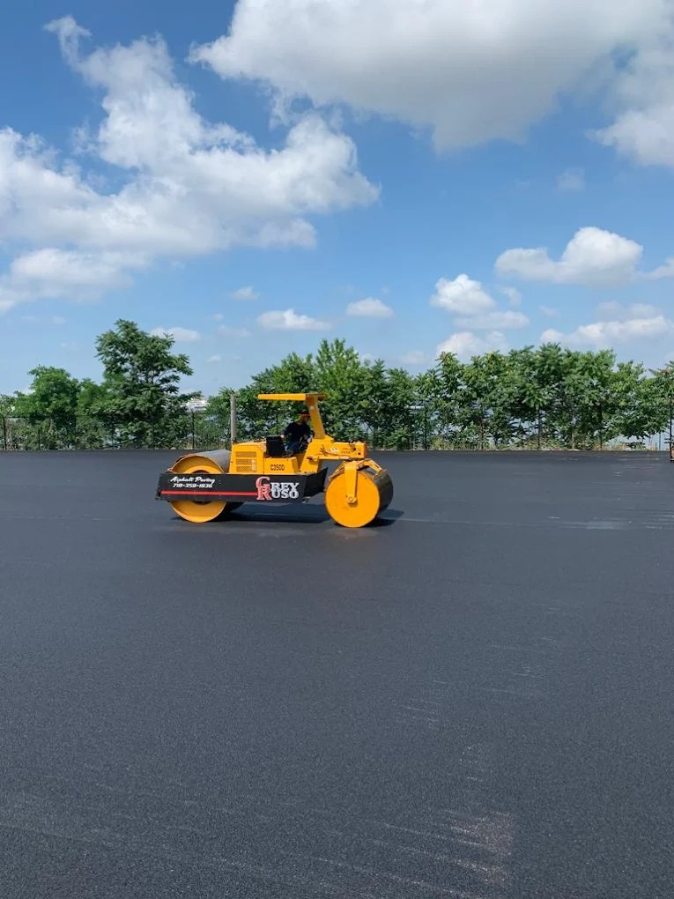
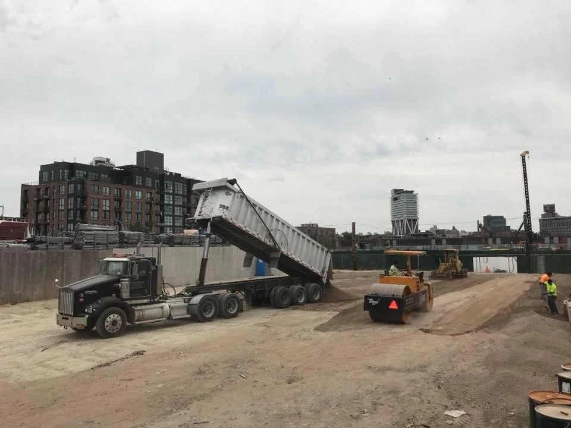

Grey Ruso - Asphalt, Paving & Construction is a family-owned and operated paving contractor based in College Point, New York, with a continuous operating history stretching back to 1987. Founded on a straightforward principle — deliver commercial-grade paving with the accountability of a family business — Grey Ruso has grown into one of the most experienced asphalt paving and construction companies in Queens County. The company's client base spans schools, hospitals, commercial office complexes, industrial facilities, and municipal properties, served from the company's home address at 20-48 130th St, College Point, NY 11356. Nearly four decades in the same borough means the team knows the soil conditions, drainage patterns, traffic realities, and regulatory environment that define every project in the New York metropolitan area.
What distinguishes Grey Ruso from larger commercial paving firms is the direct involvement of the company's principals on every project. Clients working with Grey Ruso aren't handed off to a rotating roster of project managers after the contract is signed — they work with the same experienced team from initial site assessment through final surface inspection. That continuity of contact produces better communication, faster problem resolution, and a shared stake in the outcome that shows up in the quality of the finished pavement. The company's reputation in College Point and across Queens County has been built project by project over 38 years, not through advertising but through referrals from property managers, facility directors, and institutional procurement officers who have seen the work firsthand.
Grey Ruso's service scope covers the full range of commercial asphalt and concrete work that Queens County properties require. Asphalt paving and installation, concrete work, drainage systems, paver installation, asphalt pavement repairs, parking lot paving services, and commercial construction all fall within the company's capabilities. Projects range from targeted pavement repairs on a single parking lot section to full-scale lot reconstruction with new subgrade, drainage infrastructure, and traffic markings. The same attention to material specification, base preparation, and workmanship quality applies regardless of project size. Grey Ruso serves clients throughout the five boroughs, Long Island, and Westchester from its College Point base, maintaining the logistics capability to serve the full New York metropolitan commercial market.
Commercial property owners throughout College Point and Queens County choose Grey Ruso because the company consistently delivers what was promised, on the timeline and budget agreed. That consistency over 38 years of continuous operation reflects the disciplines that define serious commercial contractors: accurate scope development, honest cost estimation, proper material specification, and quality execution verified through direct supervision. Grey Ruso's licensed, bonded, and insured status meets the requirements of institutional and municipal procurement, while the company's family-owned scale keeps response times and communication quality at a level that larger contractors rarely maintain. Whether your project is a school parking lot in the 11356 ZIP code, a hospital facility in Flushing, or an industrial warehouse yard in Long Island City, Grey Ruso brings the right capabilities and the right commitment to the work. Contact Grey Ruso - Asphalt, Paving & Construction at 718-358-1836 or visit us at 20-48 130th St, College Point, NY 11356.

Grey Ruso delivers comprehensive asphalt paving and construction services to commercial, industrial, institutional, and municipal clients throughout Queens County and the greater New York area. The company's core services include asphalt paving and installation, asphalt pavement repairs, concrete work, drainage systems design and installation, paver installation, and parking lot paving services. Each service is scoped, estimated, and executed with the same attention to material quality and workmanship that has defined the company since 1987. Learn more about common asphalt problems and their solutions. Grey Ruso manages projects end to end — from site assessment and base preparation through surface installation and final marking — eliminating the coordination gaps that create quality problems when multiple subcontractors are involved.

Quality at Grey Ruso is not a marketing statement — it is a practical standard enforced at every project stage. Material specifications are written into contracts so clients can verify that what was designed is what was installed. Base preparation is inspected before surface courses are laid. Drainage grades are verified before paving begins to prevent the water management failures that shorten pavement life. Finished surfaces are inspected for compaction uniformity, edge quality, and drainage performance before the project is considered complete. That standard applies equally to a 500-square-foot patch repair and a 50,000-square-foot new lot installation. It is the reason Grey Ruso's commercial clients in College Point, Flushing, Whitestone, and throughout Queens County continue to return for follow-on projects and refer the company to colleagues managing similar properties.
Grey Ruso - Asphalt, Paving & Construction serves customers throughout College Point and Queens County, including Whitestone, Flushing, Bayside, Murray Hill, Malba, Long Island City, Astoria, Jamaica, and the College Point Corporate Park district. Whether your facility is located in the waterfront industrial corridor of College Point, the dense commercial avenues of Flushing, or the mixed-use blocks of Long Island City, our paving contractor team brings full commercial capabilities to your project. Service extends to Nassau County, Long Island, and Westchester for qualifying commercial and institutional engagements.